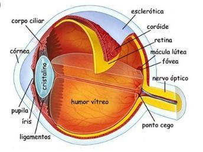

Um projeto interativo sobre a ciência da luz, lentes e a magia da visão.
1. O Olho Humano
O olho humano é um instrumento óptico complexo e perfeito. Ele capta a luz e a converte em impulsos elétricos que o cérebro interpreta.

Principais Partes:
Córnea: A "janela" transparente da frente do olho. Protege e ajuda a focar a luz.
Humor aquoso: Líquido transparente que nutre a córnea e o cristalino, mantendo a pressão ocular.
Pupila: A abertura escura no centro da íris que regula a entrada de luz.
Íris: A parte colorida do olho. É um músculo que controla o tamanho da pupila.
Cristalino: A lente natural do olho, que ajusta o foco para objetos próximos e distantes (acomodação visual).
Retina: A "tela" no fundo do olho, cheia de células fotorreceptoras (cones e bastonetes) que captam a luz.
Nervo óptico: O cabo que transmite os sinais elétricos da retina para o cérebro.
Córtex visual: A área do cérebro (lobo occipital) responsável por processar a imagem.
2. A Visão: Como a imagem é formada?
O processo da visão é um verdadeiro trabalho em equipe das estruturas oculares:
A luz refletida por um objeto entra pela Córnea, que faz o primeiro grande ajuste de foco.
A luz passa pela Pupila (controlada pela Íris).
Chega ao Cristalino, que faz o ajuste fino (foco) para que os raios de luz converjam perfeitamente na parte de trás do olho.
A imagem se projeta na Retina de forma invertida (de cabeça para baixo).
A retina transforma essa luz em sinais elétricos, enviados pelo Nervo óptico.
O Córtex visual no cérebro recebe esses sinais, processa e inverte a imagem novamente, para que vejamos o mundo na posição correta!
Você sabia? Quando você sai de um lugar escuro para um lugar claro, o sol ofusca sua visão por alguns segundos porque a sua íris precisa de um tempo para contrair a pupila e diminuir a entrada de luz!
3. Leis da Reflexão da Luz
A reflexão ocorre quando a luz atinge uma superfície e volta a se propagar no meio de origem (como bater uma bola na parede).
As Duas Leis:
1ª Lei da Reflexão: O raio incidente (que chega), a reta normal (perpendicular à superfície) e o raio refletido (que sai) estão no mesmo plano (são coplanares).
2ª Lei da Reflexão: O ângulo de incidência (i) é sempre igual ao ângulo de reflexão (r).
[Insira aqui um esquema mostrando o raio incidente, refletido e os ângulos]
Exemplos no Cotidiano:
O reflexo que você vê no espelho do banheiro, o brilho da lua (que reflete a luz do sol) e a capacidade de enxergarmos objetos não-luminosos (eles refletem a luz do ambiente até nossos olhos).
4. Lentes Esféricas
As lentes esféricas refratam a luz para alterar a forma como vemos os objetos. Elas são divididas pelo formato de suas bordas.
Lentes Convergentes (Bordas finas)
Fazem os raios de luz se encontrarem em um único ponto (foco). Usadas para corrigir hipermetropia.
Biconvexa: Duas faces convexas (curvadas para fora).
Plano-convexa: Uma face plana e outra convexa.
Côncavo-convexa: Uma face côncava e outra convexa (mas a convexa é predominante).
Lentes Divergentes (Bordas espessas)
Espalham os raios de luz. Usadas para corrigir miopia.
Bicôncava: Duas faces côncavas (curvadas para dentro).
Plano-côncava: Uma face plana e outra côncava.
Convexo-côncava: Uma face convexa e outra côncava (côncava predominante).
[Insira aqui a ilustração com o desenho dos 6 tipos de lentes]
5. Refração da Luz
Conceito: É o fenômeno que ocorre quando a luz muda de meio de propagação (por exemplo, do ar para a água), sofrendo uma alteração na sua velocidade e, geralmente, um desvio na sua direção (ela "entorta").
Exemplos do dia a dia:
O canudo que parece "quebrado" quando colocado em um copo com água.
Uma piscina que parece mais rasa do que realmente é.
A formação do arco-íris (a luz do sol sofre refração nas gotas de chuva).
[Insira aqui a foto clássica do canudo/lápis no copo d'água]
6. Índice de Refração
O que representa: É um número (sem unidade de medida) que indica o quanto um meio dificulta a passagem da luz. É calculado pela razão entre a velocidade da luz no vácuo e a velocidade da luz no meio material.
Como influencia o comportamento da luz: Quanto maior o índice de refração de um material, menor é a velocidade da luz dentro dele, e maior será o desvio que o raio de luz sofrerá ao entrar nesse material.
Exemplos de materiais:
Vácuo: 1,00 (referência absoluta)
Ar: ~ 1,00 (quase não altera a velocidade)
Água: ~ 1,33
Vidro comum: ~ 1,50
Diamante: ~ 2,42 (É por ter um índice tão alto que o diamante brilha tanto, prendendo a luz lá dentro!)
7. Fibra Óptica
As fibras ópticas são filamentos finíssimos (como fios de cabelo) feitos de vidro puro ou plástico que transmitem luz ao longo de grandes distâncias.
Como funciona?
Ocorre o fenômeno da Reflexão Total Intena. A luz entra por uma das pontas e vai batendo nas paredes internas da fibra, refletindo continuamente sem escapar, até sair na outra ponta.
Aplicações no Cotidiano:
Internet de alta velocidade: Transmissão de dados a velocidades ultrarrápidas, conectando oceanos e continentes.
Medicina (Endoscopias): Permite iluminar e visualizar o interior do corpo humano sem grandes cortes.
Iluminação decorativa.
Vantagens da Utilização:
🚀 Transmissão de dados quase na velocidade da luz.
🛡️ Imunidade a interferências eletromagnéticas (não sofre ruídos como fios de cobre).
🔒 Maior segurança de dados e capacidade incrível de banda larga.